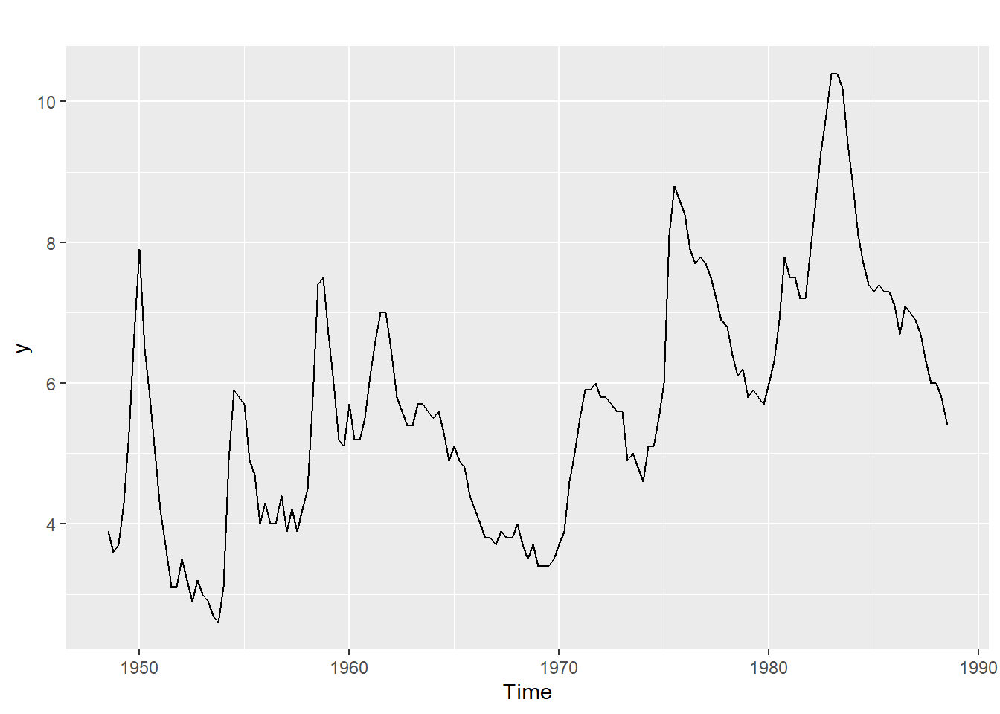
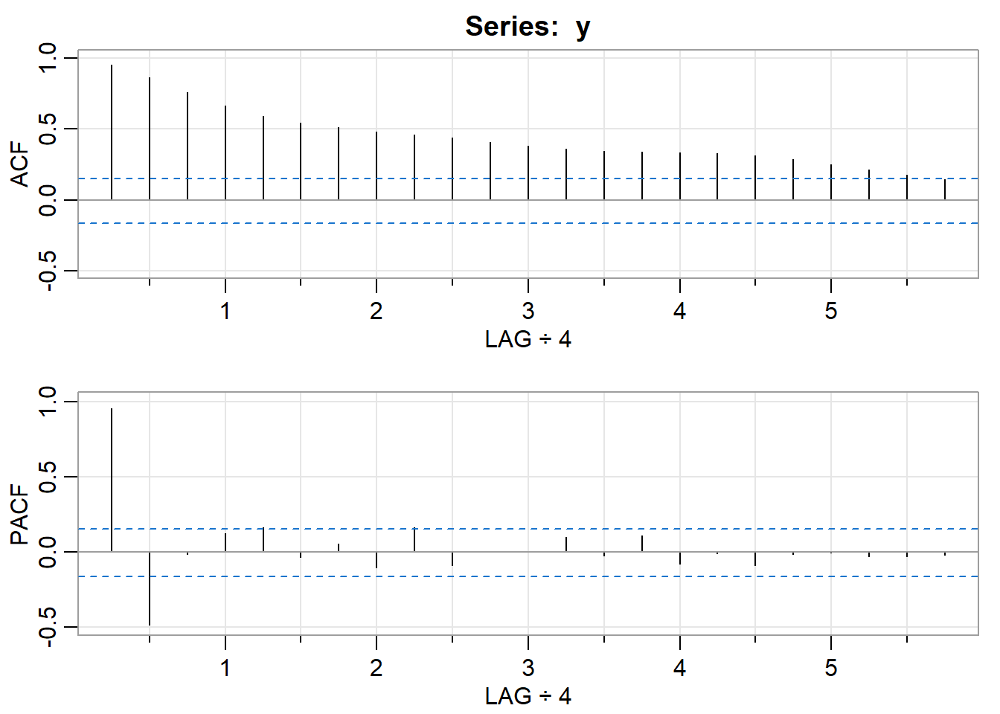

Cvičenie 4 - Zostavenie a testovanie ARIMA modelov
1 Potrebé knižnice pre cvičenie 4
2 Minimálna kostra - príklad 2
Cieľom bude nájdenie vhodného ARIMA modelu pre dáta (na skúške bývajú dáta, ako tieto naše, ktoré sa dajú modelovať ako ARIMA proces, pričom p ani q nie sú väčšie ako 5)
Majme data z knižnice astsa:

Zadanie bude nasledovné:
- Vysvetlite koľko krát a prečo sa majú dáta diferencovať. Čiže pre každý časový rad (pôvodné dáta, prvé diferencie, druhé diferencie, …) napíšte, či ste dáta diferencovali a prečo. Skončite tým, že určitý časový rad nebude treba už viac diferencovať
- Testovanie jednotkového koreňa. V poslednom kroku nastala situácia, že v dátach nebol trend, ani jednotkový koreň, a preto ich nebolo nutné diferencovať. Podrobne vysvetlite, čo sa tam dialo:
Napíšte s akými parametrami ADF testu ste dáta testovali a aká regresia sa tam odhadla.- Aká hypotéza o koeficientoch regresie sa testuje?
- Odvoďte, že táto hypotéza predstavuje hypotézu o jednotkovom koreni daného časového radu.
- Kedy túto hypotézu zamietame (ako vyzerá kritériu založené na testovej štatistike a kritickej hodnote)?
- Čo vyšlo v našom prípade (zamietame vs. nezamietame), čo to znamená pre diferencovanie nášho časového radu (diferencovať vs. nediferencovať)?
- Nájdite vhodný ARIMA model pre dáta
y. Požiadavky sú: stacionarita, invertovateľnosť a p-hodnoty Ljung-Boxovho testu nad 5%.
Riešenie:
- Dáta podľa grafu nevykazujú prítomnosť trendu. To znamená, že dáta
yotestujeme už iba na prítomnosť jednotkového koreňa. Stredná hodnota dát vyzerá byť niekde v okolí hodnoty 5, preto zvolímetype = "drift". Je dôležité zvoliť primeraný počet lagov,aby sa nám nestalo, že všetky lagy sa nám dostanú do výsledného modelu. V takom prípade nevieme, či je to najlepší možný model pre naše dáta podľa IC alebo sme ho dostali iba kvôli tomu, že sme väčší počet lagov nepovolili. V našom prípade zvolímelags = 4. IC zvolíme napríkladselectlags = "BIC".
##
## ###############################################
## # Augmented Dickey-Fuller Test Unit Root Test #
## ###############################################
##
## Test regression drift
##
##
## Call:
## lm(formula = z.diff ~ z.lag.1 + 1 + z.diff.lag)
##
## Residuals:
## Min 1Q Median 3Q Max
## -1.46609 -0.30430 0.02727 0.27560 1.31635
##
## Coefficients:
## Estimate Std. Error t value Pr(>|t|)
## (Intercept) 0.73035 0.22553 3.238 0.001829 **
## z.lag.1 -0.15690 0.04495 -3.490 0.000833 ***
## z.diff.lag 0.47941 0.09824 4.880 6.3e-06 ***
## ---
## Signif. codes: 0 '***' 0.001 '**' 0.01 '*' 0.05 '.' 0.1 ' ' 1
##
## Residual standard error: 0.4684 on 71 degrees of freedom
## Multiple R-squared: 0.2945, Adjusted R-squared: 0.2747
## F-statistic: 14.82 on 2 and 71 DF, p-value: 4.176e-06
##
##
## Value of test-statistic is: -3.4904 6.281
##
## Critical values for test statistics:
## 1pct 5pct 10pct
## tau2 -3.51 -2.89 -2.58
## phi1 6.70 4.71 3.86V dátach teda nie je prítomný jednotkový koreň (test ho zamietol na hladine významnosti 5%), preto ich nebudeme ďalej diferencovať.
Regresia, ktorá sa odhadla v teste \[ \Delta z_{t} = \alpha + c_{1}z_{t-1}+c_{2}\Delta z_{t-1} + e_{t}\]
Hypotéza, ktorá sa testuje pre koeficienty z regresie \[ H_{0}: c_{1} = 0 \;vs\; H_{1}: c_{1} < 0 \]
Odvodenie, že hypotéza predstavuje aj hypotézu o jednotkovom koreni daného časového radu \[ \Delta z_{t} = \alpha + c_{1}z_{t-1}+c_{2}\Delta z_{t-1} + e_{t}\] \[ z_{t}- z_{t-1}= \alpha + c_{1}z_{t-1}+c_{2}(z_{t-1}-z_{t-2}) + e_{t}\] \[ z_{t}= \alpha + (1+c_{1}+c_{2})z_{t-1}+(-c_{2})z_{t-2} + e_{t}\] \[ [1-(1+c_{1}+c_{2})L+c_{2}L^{2}]z_{t}= \alpha + e_{t}\]
Ak by daný polynóm \(1-(1+c_{1}+c_{2})L+c_{2}L^{2}\) mal jednotkový koreň, platilo by \[1-(1+c_{1}+c_{2})+c_{2} = 0 \] respektíve \[-(1+c_{1}+c_{2})+c_{2} = -1 \] z čoho po úprave dostávame, že \(c_{1} = 0\). Vidíme, že hypotéza o testovaní koeficientu \(c_{1}\) z regresie, je totožná s hypotézou o testovaní jednotkového koreňa.
Hypotézu zamietame ak je testová štatistika (
test-statistic is: -3.4904) menšia ako sú kritické hodnoty(pre náš prípad máme kritické hodnoty dané):
## 1pct 5pct 10pct
## tau2 -3.51 -2.89 -2.58
V našom prípade výšlo, že testová štatistika je na hladine významnosti 5% menšia ako kritická hodnota, z toho dôvodu zamietame hypotézu \(H_{0}\) a prijímame hypotézu \(H_{1}\). Znamená to, že v dátach nie je prítomný jednotkový koreň, teda dáta nemusíme diferencovať.
Hľadanie vhodného ARIMA modelu

## [,1] [,2] [,3] [,4] [,5] [,6] [,7] [,8] [,9] [,10] [,11] [,12] [,13]
## ACF 0.89 0.67 0.44 0.25 0.13 0.08 0.07 0.07 0.08 0.08 0.06 0.04 0.03
## PACF 0.89 -0.51 -0.06 0.10 0.13 -0.06 0.04 -0.08 0.14 -0.12 0.02 -0.01 0.08
## [,14] [,15] [,16] [,17] [,18] [,19]
## ACF 0.02 0.04 0.08 0.10 0.08 0.02
## PACF -0.04 0.12 -0.01 -0.04 -0.19 -0.03- Podľa ACF/PACF vyzerá, že vhodný model pre naše dáta by mohol byť AR(2). Dôvod je ten, že PACF(k), pre k > 2 vyzerá byť nulová a ACF je nenulová a postupne klesá.

## $fit
##
## Call:
## stats::arima(x = xdata, order = c(p, d, q), seasonal = list(order = c(P, D,
## Q), period = S), xreg = xmean, include.mean = FALSE, transform.pars = trans,
## fixed = fixed, optim.control = list(trace = trc, REPORT = 1, reltol = tol))
##
## Coefficients:
## ar1 ar2 xmean
## 1.3667 -0.5336 4.7582
## s.e. 0.0928 0.0933 0.3057
##
## sigma^2 estimated as 0.2162: log likelihood = -53.39, aic = 114.77
##
## $degrees_of_freedom
## [1] 77
##
## $ttable
## Estimate SE t.value p.value
## ar1 1.3667 0.0928 14.7222 0
## ar2 -0.5336 0.0933 -5.7183 0
## xmean 4.7582 0.3057 15.5676 0
##
## $AIC
## [1] 1.434655
##
## $AICc
## [1] 1.438602
##
## $BIC
## [1] 1.553756P-hodnoty Ljung-Boxovho testu sú viac ako 5%. Invertovateľnosť netreba overovať, keďže nemáme MA členy. Overíme ešte stacionaritu.
Budeme počítať korene polynómu \(1-1.3667L + 0.5336 L^{2} = 0\), pričom tieto musia byť mimo jednotkový kruh.
## [1] 1.280641+0.483758i 1.280641-0.483758i## [1] 1.368964 1.3689642 komplexne združené korene v absolútnej hodnote viac ako 1, máme stacionárny proces.
2.1 Rovnaký koreň pre oba polynómy
Modelujme predchadzajúce dáta ako ARMA(3,1) proces
## $fit
##
## Call:
## stats::arima(x = xdata, order = c(p, d, q), seasonal = list(order = c(P, D,
## Q), period = S), xreg = xmean, include.mean = FALSE, transform.pars = trans,
## fixed = fixed, optim.control = list(trace = trc, REPORT = 1, reltol = tol))
##
## Coefficients:
## ar1 ar2 ar3 ma1 xmean
## 0.4827 0.6355 -0.4290 0.9453 4.7569
## s.e. 0.1170 0.1323 0.1108 0.0560 0.3142
##
## sigma^2 estimated as 0.2103: log likelihood = -52.42, aic = 116.84
##
## $degrees_of_freedom
## [1] 75
##
## $ttable
## Estimate SE t.value p.value
## ar1 0.4827 0.1170 4.1254 1e-04
## ar2 0.6355 0.1323 4.8038 0e+00
## ar3 -0.4290 0.1108 -3.8701 2e-04
## ma1 0.9453 0.0560 16.8952 0e+00
## xmean 4.7569 0.3142 15.1410 0e+00
##
## $AIC
## [1] 1.460546
##
## $AICc
## [1] 1.470681
##
## $BIC
## [1] 1.639198Tento proces môžeme zapísať v tvare \[(1-0.4827L - 0.6355 L^{2} +0.4290L^{3})y_{t} = \delta + (1+0.9453L)u_{t}\]
Spočítajme si korene daných polynómov:
## [1] 1.327070+0.475874i -1.172789+0.000000i 1.327070-0.475874i## [1] -1.057865+0iVykreslíme si ich do komplexnej roviny:
phi <- seq(0, 2*pi, length.out = 100)
cos.phi <- cos(phi)
sin.phi <- sin(phi)
ar.poly <- polyroot(c(1, -model.y$fit$coef[1:3]))
ma.poly <- polyroot(c(1, model.y$fit$coef[4]))
qplot(cos.phi, sin.phi, geom = "path")+
geom_point(aes(x = Re(ar.poly), y = Im(ar.poly)), color = "#D55E00")+
geom_point(aes(x = Re(ma.poly), y = Im(ma.poly)), color = "#009E73")+
geom_vline(xintercept = 0, linetype = "dashed")+
geom_hline(yintercept = 0, linetype = "dashed")+
xlab('Re') + ylab('Im')+
scale_y_continuous(limits = c(-2, 2))+
scale_x_continuous(limits = c(-2, 2)) Korene AR a MA časti vyšli blízko seba, z toho vyplýva, že by sme mali o 1 znížiť rád AR aj MA členov.
Korene AR a MA časti vyšli blízko seba, z toho vyplýva, že by sme mali o 1 znížiť rád AR aj MA členov.
3 Ďalšie príklady
Zopakujte postup vyššie pre nasledovné dáta: